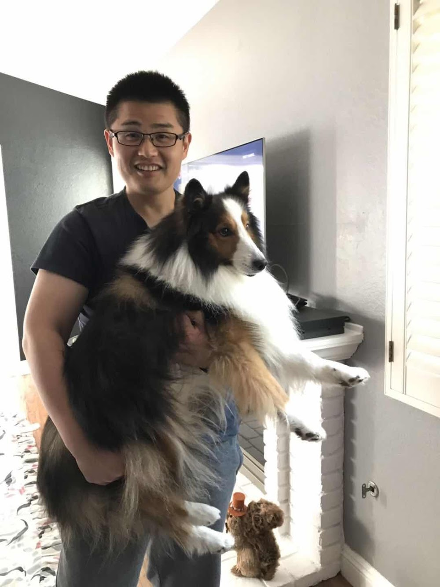

Welcome! My name is Shuai Zhang and I am a senior machine learning
engineer at Qualcomm AI Research, USA.
My research interests lie in numerical optimization, computer vision and neural networks,
especially on EdgeAI.
Feel free to look at my research
and my resume to learn more!
NOTE: This is a personal webpage and any views or information reflect
solely the author and are not the views of the Qualcomm.